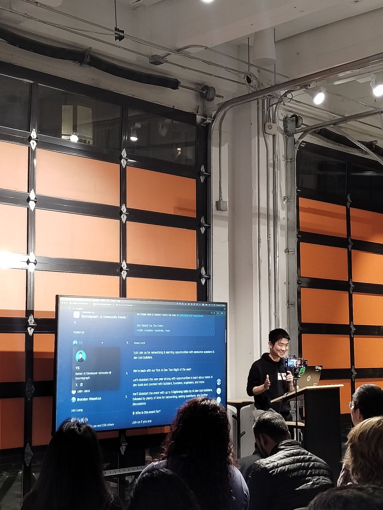
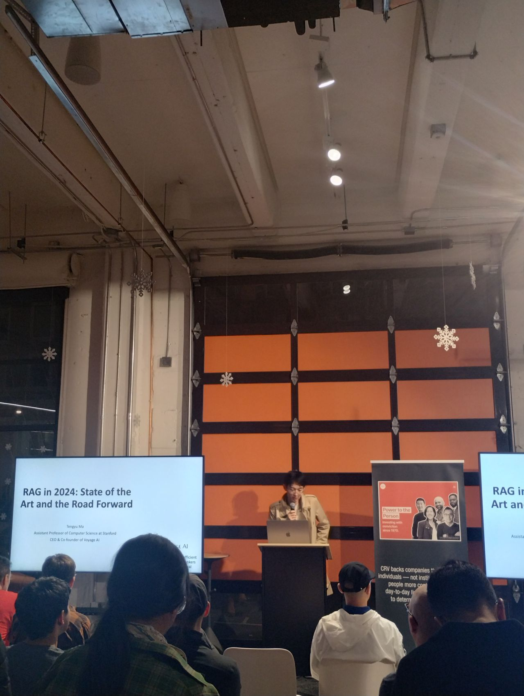

Astha.
Home
About
Projects
Blog
Resume
Blog
Welcome to my blog — a space where I share thoughts, projects, and updates from the world of tech.
Trends
🔒 Online Safety Reminder: Protect Your Personal Data
Nov 5, 2024
Sharing personal data online can invite harassment—stay vigilant and protect your digital boundaries.
Read more →
Events
Exciting Day at Think Round Inc. 🌟
Oct 12, 2024
Presented our website progress and supported the social media launch—grateful for an amazing team and impactful collaboration!
Read more →
Updates
🌠Portfolio Website is Live!
Mar 21, 2024
Just launched my personal portfolio—excited to showcase my projects and explore new opportunities in software engineering or data science! 🚀
Read more →
Updates
Scaler Masterclass: Building an E-commerce Platform with React
Jan 25, 2024
Completed the Scaler Masterclass on building an e-commerce platform with React, enhancing my skills in React development and building dynamic, responsive applications.
Read more →
Updates
📠Master's in Computer Science – A Journey of Growth and Gratitude 🚀
Dec 20, 2023
Thrilled to have completed my Master's in Computer Science from UTD, grateful for the experiences, support from mentors, and the incredible library team that made this journey unforgettable!
Read more →
Hackathons
🚀 Grateful for the HackCBRE Hackathon Experience! 🎉
Oct 12, 2023
Had an amazing time participating in the HackCBRE hackathon! It was a fantastic opportunity to collaborate with talented individuals, explore new ideas, and contribute to innovative solutions. Huge thanks to the University Career Center (UCC) and CBRE for their mentorship and support throughout the event. Looking forward to more experiences like this!
Read more →
Updates
📠Node-RED: Basics to Bots Certification by IBM
Jul 2, 2018
Earned certification in creating applications using Node-RED, including REST APIs, Watson cognitive services, and Facebook Messenger bots.
Read more →
Events
🐍 SF Python Meetup at GitHub – What a Night!
Nov 19, 2024
Had an amazing time diving into open-source with Pallets Projects and connecting with fellow Pythonistas last week!
Read more →
Events
🚀 Bay Area Coders Collective: Cloud & AI Talks with Googlers!
Nov 16, 2024
Had a blast learning about BigQuery, Cloud Run with GPUs, and AI-powered tools from the experts at Google—can’t wait to apply it all!
Read more →
Events
🤖 AI Debate: Acceleration vs. Safety – Finding the Right Balance
Nov 12, 2024
Attended a powerful discussion with the SuperHuman Society on the future of AI—how do we innovate fast while keeping ethics and safety in check?
Read more →
Events
💫 Inspired at WiDS 2024 with IBM!
Oct 30, 2024
An unforgettable day of learning, connection, and celebrating women driving innovation in data science and AI. 🚀
Read more →
Events
🎨🤖 Figma x GitHub Dev Meetup Vibes!
Oct 29, 2024
Loved diving into design-to-code magic, Copilot Workspace innovations, and connecting with fellow devs and designers in SF last week! 🚀
Read more →
Analytics
📊 Unlocking CRM Analytics – New Series Launch!
Dec 5, 2024
Kicking off a series on how CRM analytics powers growth through segmentation, personalization, and predictive insights—backed by real-world experience with Fortune 500 brands!
Read more →
Events
🻠SF Founders Brew Mixer – Great Vibes & Conversations!
Nov 27, 2024
Connected with brilliant founders and innovators over drinks, ideas, and inspiring startup stories at a fantastic SF mixer!
Read more →
HealthTech
📚 The Breast Cancer Challenge – A Global Health Priority
Nov 26, 2024
Kicking off my new series with an overview of breast cancer, diagnosis challenges, and the critical role AI can play in early detection.
Read more →
Updates
🚀 Joined the Google Developer Program!
Nov 24, 2024
Thrilled to kick off this new journey with Google, dive into new tools, and connect with an amazing global developer community.
Read more →
Events
🌟 Built an AI Chatbot Using Zoom + Cerebras!
Nov 23, 2024
Had a blast at the AWS GenAI Loft workshop learning to create AI-powered chatbots with the Zoom Developer Platform and Cerebras' cutting-edge tech.
Read more →
Events
🌟 AI for Developers #20 – Event Recap!
Nov 22, 2024
Loved learning about Databricks Agents, Gemini, and enterprise AI search at AI for Developers #20—plus great convos with fellow devs! 🚀
Read more →
Hackathons
Top 3 - Hack for Social Impact
Nov 10, 2024
Top 3 at Hack for Social Impact by Terner Institute, with Fetch.ai, for Fetch Compare Build—a tech solution simplifying California housing codes to support affordable housing.
Read more →
Events
My Talk at SF Python!
Jan 11, 2025
Spoke at SF Python on my journey from Machine Learning to Full-Stack Development, sharing insights on Python, AI, and LLMs with the vibrant tech community.
Read more →
HealthTech
Fighting Cancer with ML
Dec 17, 2024
Concluded my ML in Breast Cancer series with key insights on SVMs, diagnostic challenges, and the future of AI-human collaboration in healthcare.
Read more →
Events
Co-Host - SF AI Founders & VC Networking Event
Feb 7, 2025
Co-hosted the SF AI Founders & VC Networking event—an inspiring night of conversations, connections, and collaboration in the AI space!
Read more →
Events
The Open Source Afterparty
Mar 11, 2025
A recap of the Data for AI: Open Source Afterparty in SF, featuring expert talks on graph databases, AI integration, open-source ML tools, and cutting-edge innovations in data infrastructure.
Read more →
Events
Coffee with Builders: Connecting Minds in Tech
Feb 3, 2025
A vibrant networking event in SF bringing together AI innovators, founders, and tech leaders to spark ideas and future collaborations.
Read more →
Events
The Rippling Michelin Experience: Connections Over Cuisine
Jan 31, 2025
An unforgettable evening at Birdsong hosted by Rippling, bringing together finance leaders for meaningful conversations and a world-class culinary journey in San Francisco.
Read more →
Events
All Things Web @ Sanity: Tech, Twitter & Demos
Jan 29, 2025
A fun and insightful evening at Sanity’s All Things Web event, featuring talks on tech career growth, exciting product demos, and networking with the vibrant web dev community in SF.
Read more →
Events
AI for Developers: Deep Dive into LLMs & Future AI
Jan 28, 2025
A powerful AI-focused event in San Francisco with expert talks on LLMs, phone call AI, and the future of AI development, featuring demos, insights, and networking opportunities with top developers in the field.
Read more →
Events
AI After Hours: Innovation & Collaboration in SF
Jan 18, 2025
A dynamic evening at AI After Hours in San Francisco with keynotes and discussions from AI leaders at Hugging Face, Hyperbolic, LMSYS, and Quora, exploring the future of AI and fostering collaboration in the tech community.
Read more →
Events
Data for AI: Open Source Afterparty Highlights
Jan 17, 2025
An inspiring evening at the Data for AI Open Source Afterparty in San Francisco, featuring talks on AI-driven tech, data infrastructure, and multimodal models, plus exciting networking with AI innovators and professionals.
Read more →
Events
Networking Walk: Women’s Health & Innovation at Salesforce Park
Jan 16, 2025
An inspiring Women’s Health Networking Walk at Salesforce Park, where I connected with leaders in femtech, shared meaningful conversations, and explored the future of women’s health innovation in a beautiful, peaceful setting.
Read more →
Events
Networking at SF Healthcare AI Founder & VC Event
Jan 14, 2025
An energizing evening at the SF Healthcare AI Founder & VC Networking event during J.P. Morgan HealthTech Week, connecting with innovators, founders, and investors to explore collaboration and opportunities in AI and healthcare.
Read more →
Events
Cold Start Demo Day: Innovators Unveil Game-Changing Tech
Jan 13, 2025
An inspiring Cold Start Demo Day at Founders, Inc., where 75 talented builders showcased their AI, robotics, and gaming innovations after 30 days of intense work, pushing the boundaries of entrepreneurship and technology.
Read more →

Events
AI Dev Tools Night: Connecting Innovators at Cloudflare HQ
Jan 8, 2025
A thrilling evening at Cloudflare HQ where AI enthusiasts gathered for lightning talks on performance optimization, AI agents, and open-source solutions. Special mention to YK Sugi, whose CS Dojo coding videos helped me level up my skills! Looking forward to more innovation in AI. 🚀
Read more →
Trends
2025 Tech Trends: Shaping the Future
Jan 6, 2025
AI, blockchain, space exploration, and sustainability are set to redefine the tech landscape in 2025. What excites you the most?
Read more →
Updates
Just got the Google Developer Experts follower badge! 🎉
Nov 29, 2024
Excited to be part of the community and looking forward to learning more along the way. 🚀
Read more →
Updates
Empowered by the She Builds AI Campaign: Supporting Women in Tech! 🌟
Nov 30, 2024
Inspired by the She Builds AI campaign by Women Techmakers, supporting women in AI and tech with valuable resources and community! 🌟
Read more →
Analytics
Unlocking the Power of CRM Analytics 🚀
Dec 27, 2024
Explore how AI and predictive analytics are transforming CRM strategies for better customer engagement, targeting, and personalization.
Read more →

Events
🉠HolidayAI Recap: AI Talks & Networking with OpenAI, Swyx, CRV, and Cloudflare 🎉
Dec 24, 2024
Reflecting on an amazing evening at HolidayAI, where we dove into AI advancements with experts from OpenAI, Swyx, CRV, and Cloudflare. Great networking and insights on AI’s future in e-commerce and more!
Read more →
Events
🌟 Exciting Recap from AI For Developers #21 🌟
Dec 23, 2024
Had an amazing time at AI for Developers #21 in San Francisco! Deep dives into AI, machine learning, and generative AI with experts like Sinan Ozdemir, Sri Bala, and Laxmi Harikumar. Great networking and learning from the community!
Read more →
Analytics
Unlocking the Power of CRM Analytics: The Data-Backed ROI Story
Dec 20, 2024
Explore how CRM analytics is delivering impressive ROI across industries like retail, financial services, and healthcare with real-world case studies, key metrics, and implementation best practices for boosting business growth.
Read more →
Events
🉠What a Blast at the Humiris Launch Party! 🎉
Dec 16, 2024
Incredible night of AI innovation, live demos, and meaningful conversations on ethics, sustainability, and the future of Agentic AI—Humiris is definitely one to watch! 🚀
Read more →
Events
AI x Future of Work v.3 Recap 🚀
Dec 16, 2024
A dynamic event by Aiify.io, Ontology of Value, and Fetch.ai Innovation Lab exploring AI’s impact on careers, skills, and the workforce of tomorrow.
Read more →
Events
Cloud, AI & Data Talks with Googlers ☁️🤖
Dec 15, 2024
An inspiring evening in SF diving into AI coding, real-time data, and cloud innovation—huge thanks to Google Developer Relations for the insights and connections!
Read more →
Hackathons
AI Video Gen Hackathon Recap 🎥💡
Dec 13, 2024
Built a virtual doctor prototype at the HeyGen x GenAI Collective Hackathon—an exciting step toward AI-powered healthcare innovation!
Read more →
Analytics
Unlocking CRM Analytics for Growth 📊
Dec 12, 2024
Exploring key CRM metrics like CLV, NPS, and retention rates to drive smarter, data-driven decisions and build stronger customer relationships.
Read more →
Events
WTM SF End of Year Celebration 🎉💻
Dec 11, 2024
Celebrated an inspiring evening with Women Techmakers SF—connecting with amazing women in tech, learning from AI-driven talks, and exploring new opportunities for 2025!
Read more →
HealthTech
SVM: Revolutionizing Tumor Detection
Dec 10, 2024
A deep dive into how Support Vector Machines are driving breakthroughs in breast cancer diagnostics with high accuracy, even on small datasets.
Read more →
Hackathons
Building the Future at the Voice & Video AI Agents Hackathon 🎯🤖
Dec 9, 2024
Had a blast building an AI-powered voice & video solution for eCommerce with an incredible team—grateful for the innovation, insights, and community at this unforgettable SF hackathon!
Read more →
Events
AI After Hours: Innovation Meets Celebration 🎉🤖
Dec 8, 2024
Explored decentralized AI, connected with brilliant minds, and gained fresh inspiration at Hyperbolic & Sahara AI’s vibrant community event in San Francisco!
Read more →
Events
Mastering Multi-Agent Systems at GitHub 🚀💡
Dec 7, 2024
Built skills in CrewAI, RAG, and agent evaluation at GitHub’s Developer Bootcamp—an inspiring night of learning, networking, and leveling up in the world of AI agents!
Read more →
Events
🚀 Diving into RAG, LLMs & Multimodal AI at the Unstructured Data Meetup!
Dec 6, 2024
Attended an amazing event hosted by Zilliz at Airbyte, where I learned from industry leaders and explored innovations in unstructured data. From building high-accuracy RAG systems to exploring multimodal AI with TableGPT2, this meetup was packed with actionable insights—and I’m already applying some ideas in my own projects!
Read more →
Events
🚀 AI Consumer Products Meetup – Empowering Through Innovation
Dec 4, 2024
Explored exciting new tools in AI-powered consumer tech and shared insights from my own builds in the space!
Read more →
HealthTech
ML Techniques Revolutionizing Breast Cancer Diagnosis
Dec 3, 2024
A deep dive into how top machine learning models like SVM and ANN are improving accuracy and cutting costs in cancer diagnostics.
Read more →
Trends
🏙️ From Gold Rush to Tech Boom: Exploring SF’s Hidden History
Dec 2, 2024
A walk through San Francisco's past reveals a wild transformation from a sleepy village to a global city—complete with buried ships and gold fever.
Read more →
Updates
🌟 Joined Google’s Women Techmakers Program!
Nov 30, 2024
Excited to be part of a global community empowering women in tech with resources, events, and opportunities for growth.
Read more →
Events
🂠Attended DevsGiving at Cloudflare! ğŸ‚
Nov 28, 2024
Had an amazing time at DevsGiving, where we explored cutting-edge tech like Cloudflare Workers, Hono.js, and the HONC stack, while connecting with fellow developers!
Read more →